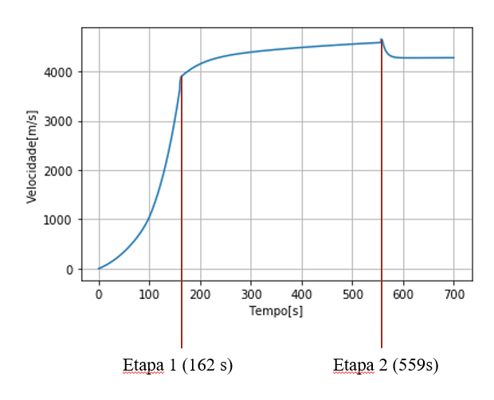

Lançamento do Falcon 9 - 1° Semestre (2017.1)

Modelagem e Simulação do Mundo Físico - Professor Fábio H.
Proposta:
O foco do último projeto desta matéria foi a modelagem de sistemas mecânicos – “mecânicos” no sentido comumente utilizado na física, ou seja, o estudo do movimento de corpos macroscópicos. Mais uma vez, o modelo seria utilizado para algum tipo de análise (ou seja, para responder a uma pergunta explicativa, preditiva ou de parametrização do sistema escolhido). Ao final, seria realizada uma apresentação em slides ou em cartaz.
Objetivos:
O Falcon 9 é um dos mais inovadores foguetes da atualidade, tendo sido produzido pela Space X. O grande desafio que lhe foi proposto era reutilizar os propulsores do foguete uma vez que ejetados. Nesse trabalho modelamos o lançamento do Falcon 9 avaliando sua velocidade e altura. Para tal foi necessário levar em conta a constante mudança de massa da aeronave, tanto devido ao uso do combustível quanto pela perda dos propulsores. A modelagem foi feita em etapas para obter um resultado mais próximo a realidade (antes da liberação das partes e depois) e a validação foi feita utilizando os dados reais do lançamento.
Conteúdo trabalhado:
- 2° Lei de Newton
- Arrasto Aerodinâmico
- Diagrama de Corpo Livre → Somas Vetoriais
- Cálculo Diferencial → equações diferenciais de segunda ordem
- Sistema de coordenadas: Espaço percorrido
- Velocidade e Aceleração como taxas de variação do espaço
- Prática de implementação de modelos equacionados em Python → simulação temporal
Resultados:
A partir do modelo, equações e gráficos obtidos, foi possível analisar para o comportamneto do foguete para a respectiva variação da massa.
Voltar